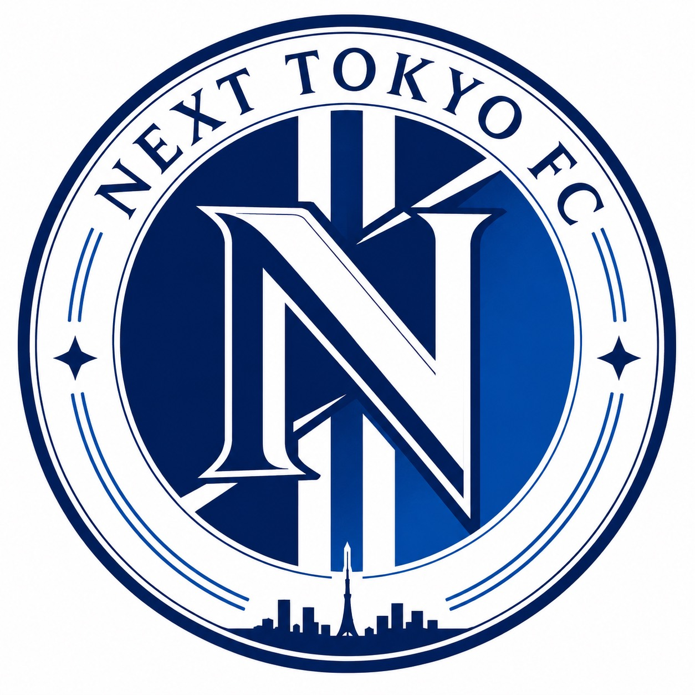

早稲田大学のサッカー・フットサルサークルまとめ【2026年版】
このページでは、早稲田大学でサッカーやフットサルができる団体をまとめています。競技志向からエンジョイ系まで、公認・非公認を問わず幅広く掲載しています。新入生のサークル選びや、在学生の移籍先探しにぜひご活用ください。
【注目】NEXT TOKYO FC — 早稲田発の社会人チーム

NEXT TOKYO FC
早稲田発・2026年創設の社会人サッカーチーム
2026年発足。現在、早稲田生で立ち上げ・運営メンバーを探しています。
サークル選びに乗り遅れた人、一度入ったサークルを辞めてしまった人、今のサークルでは物足りないと感じている人、体育会をやめてしまった人へ。組織をゼロから一緒に立ち上げて、本気でサッカーに打ち込みたい仲間を募集中です。
選手としても、運営・広報としても、関わり方は自由です。少しでも気になったら、お気軽に下記のLINEからご連絡ください。
主要サッカーサークル
1961年創立、早稲田最大にして最強のサッカー同好会。新関東フットボールリーグ1部に所属し、幾度となく日本一に輝いている、早稲田のサッカーサークルの代表格。
通称「りこさ」「早理」と呼ばれる、50年以上の歴史を持つ早稲田で最も古いサッカーサークルの一つ。理工学生中心だが他学部からの入部も多い。
所沢キャンパス最大のサッカーサークルで、新関東フットボール1部リーグに所属。「最高の青春を最高の仲間と共に」をモットーに掲げる。
2009年創立。新関東リーグ1部優勝の実績を持つ、早稲田公認のサッカーサークル。
男子は早稲田、女子はインカレで構成。ユニオンリーグ1部に所属する。
1978年創立。新関東リーグ3部に所属するサッカーサークル。
主要フットサルサークル
2019年創設。早稲田大学で唯一公式戦への出場が認められているフットサル団体で、体育会昇格を目指して活動している。
早稲田公認、アットホームでエンジョイ志向のフットサルサークル。
男子は早稲田、女子はインカレで構成。吉祥寺を拠点に活動する公認フットサルサークル。
1996年創立。試合に勝つことより楽しむことを重視するエンジョイ志向のチームで、初心者や女子も気軽に参加できる雰囲気。
オール早稲田のフットサルサークルで、「見た目から入れ。」をコンセプトに掲げる。
最終更新日：2026年7月1日
情報の修正・追加依頼は ワセダノート掲示板 よりお問い合わせください。